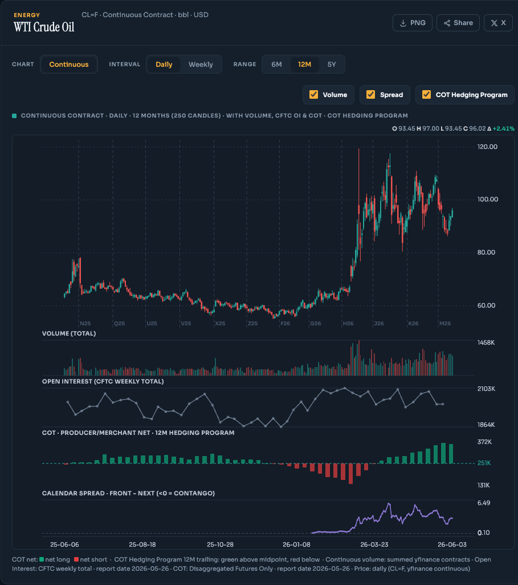

A local-first futures dashboard: commercial COT positioning, seasonality, term structure and FX strength — updated daily, on your own machine. No cloud, no sign-up.

The real dashboard — continuous price, roll markers, volume, CFTC open interest, COT hedging program and the front–next calendar spread.
ChartHorizon only flags a setup when independent signals agree — so you act on alignment, not a single indicator.
Commercial COT positioning, seasonality, term structure and FX strength have to line up before a setup counts. The Futures Strength board surfaces only 3/4 and 4/4 alignments — everything weaker is dropped.
Track what the hedgers are doing each week, straight from the CFTC — public-domain positioning data.
5-, 10-, 20- and 40-year seasonal curves with onset projection — only when four curves agree on direction.
A currency-strength heatmap from −4 to +4 with a policy-rate bias, plus the highest-conviction pairs.
Runs entirely on your machine over localhost. No cloud, no account — your data never leaves your computer.
ChartHorizon is local-first by design — partly because that is the only way to handle market data cleanly. Here is exactly what comes from where.
Weekly Commitments of Traders and open interest come straight from the CFTC. Public domain — freely used and redistributed.
OHLCV, contract chains, volume and seasonal history via yfinance. Personal use only — fetched and stored locally, never redistributed.
The full dashboard is open source under AGPL-3.0. Nothing is paywalled — inspect it, fork it, self-host it.
ChartHorizon is free and open source — no paywall, no account. If it earns a place in your workflow, you can keep development moving.
Sponsorship & partnership enquiries welcome — reach out on GitHub.
Free, open source, and running in under a minute — on macOS, Windows or Linux.
Download ChartHorizon